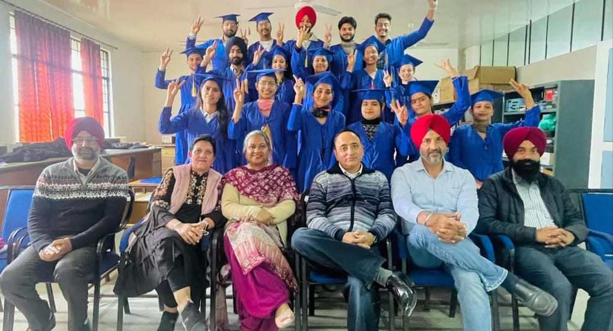
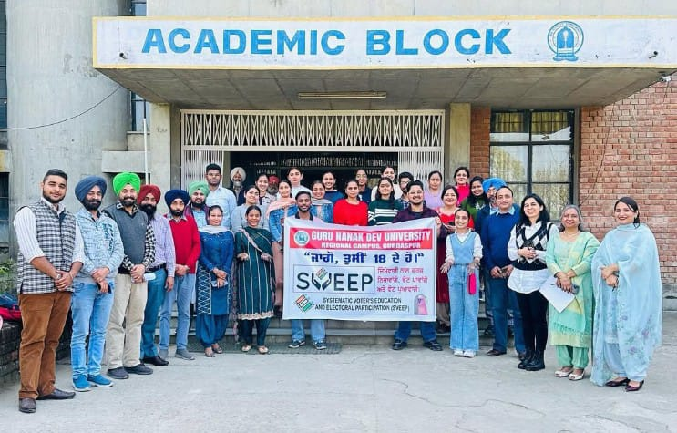

✨ Navaratri - The Festival of 9 Nights ✨
This heartfelt message is dedicated to the place that has shaped my journey —
Guru Nanak Dev University Regional Campus Gurdaspur —


where I’ve found not only knowledge, but inspiration, values, and strength.
I, Adesh Partap Singh, extend my warmest Navratri wishes to my college, my respected teachers, and all those who have guided me.
Your support and wisdom have been the light behind my creativity, the strength behind my learning, and the soul behind my work.
May Goddess Durga bless you all with health, happiness, and divine energy.
May this Navratri bring peace, prosperity, and positivity to every corner of our campus.
💕 About Navaratri 💕
Navaratri is one of the most vibrant and meaningful festivals celebrated across India. The word Navaratri comes from Sanskrit, where “Nava” means nine and “Ratri” means nights. It is a festival dedicated to honoring and celebrating the nine divine forms of Goddess Durga, each representing different values such as courage, wisdom, purity, and strength.
The celebration is colorful and diverse across India. In Gujarat and Maharashtra, people perform Garba and Dandiya Raas dances. In West Bengal and nearby regions, it coincides with the grand Durga Puja. In northern parts of India, stage performances of Ramlila are held, ending with the festival of Vijayadashami, also called Dussehra.
🥰 Nine Days of Navaratri 🥰
According to cultural traditions, each of the nine days of Navaratri is dedicated to a different form of Goddess Durga.
Together, these forms are called Navadurga.
Every day represents a special quality such as courage, purity, wisdom, or protection.
The table below explains the nine days and their symbolic meanings in a simple way.
| Day |
Form of Goddess |
Symbol / Quality |
Representation |
| Day 1 |
Shailputri |
Strength & Purity |
Known as the daughter of the mountains |
| Day 2 |
Brahmacharini |
Wisdom & Devotion |
Embodiment of discipline and knowledge |
| Day 3 |
Chandraghanta |
Bravery & Courage |
Identified by the crescent moon, symbol of protection |
| Day 4 |
Kushmanda |
Energy & Vitality |
Bringer of light, associated with creation and energy |
| Day 5 |
Skandamata |
Love & Protection |
Motherly form, associated with care and nurturing |
| Day 6 |
Katyayani |
Strength & Power |
Warrior form, remover of negativity |
| Day 7 |
Kalaratri |
Fearlessness |
Fierce form, destroys ignorance and fear |
| Day 8 |
Mahagauri |
Purity & Kindness |
Calm and gentle form, symbol of forgiveness |
| Day 9 |
Siddhidatri |
Fulfillment & Success |
Associated with spiritual energy and blessings |
🫂 Navaratri as a Social Connector 🫂
Another important part of Navaratri is its social role. It is a time when families come together, communities organize functions, and people forget their differences. The dances, music, fairs, and decorations create an atmosphere of joy. It is one of the rare festivals where spirituality and celebration go hand in hand.
In villages, towns, and cities, the nine nights bring people out of their homes to celebrate in open spaces. This promotes togetherness and removes feelings of isolation. In this way, Navaratri is not only about devotion but also about social unity and cultural exchange.
🕵️ Final Thoughts 🕵️
Navaratri, in essence, is not just about nine days of prayers but about nine days of transformation. It takes individuals through a cycle of strength, devotion, courage, energy, love, discipline, fearlessness, purity, and fulfillment. By the end of the festival, people feel spiritually refreshed and socially connected.
It is a reminder that even in diversity, there is unity. Whether it is celebrated with Garba in Gujarat, Durga Puja in Bengal, Ramlila in Uttar Pradesh, or Golu in Tamil Nadu, the essence remains the same — the victory of positive qualities over negative ones.
Therefore, the conclusion of Navaratri is not only about the triumph of good over evil but also about the awakening of human values that lead to peace, progress, and harmony in society.
♥️ शुभ नवरात्रि: माँ के चरणों में समर्पित एक भावपूर्ण संदेश ♥️
नवरात्रि के इस पावन अवसर पर आप सभी को मेरी ओर से हार्दिक शुभकामनाएँ। यह पर्व केवल एक धार्मिक अनुष्ठान नहीं, बल्कि आत्मा की जागृति, शक्ति की आराधना और जीवन की दिशा को पुनः खोजने का एक सुंदर अवसर है। माँ दुर्गा के नौ रूपों की पूजा करते हुए हम हर दिन एक नई ऊर्जा, एक नया संदेश और एक नई प्रेरणा प्राप्त करते हैं।
माँ शैलपुत्री से लेकर माँ सिद्धिदात्री तक, हर देवी हमें जीवन के किसी न किसी पहलू में मार्गदर्शन देती हैं—कभी धैर्य सिखाती हैं, कभी साहस, कभी करुणा और कभी न्याय।
नवरात्रि हमें यह याद दिलाती है कि शक्ति केवल बाहरी नहीं होती, वह हमारे भीतर भी होती है। जब हम माँ की पूजा करते हैं, हम वास्तव में अपने भीतर की शक्ति को जागृत कर रहे होते हैं। यह पर्व हमें आत्मनिरीक्षण करने का अवसर देता है, अपने विचारों को शुद्ध करने का समय देता है और अपने कर्मों को दिशा देने का संकल्प देता है। उपवास केवल शरीर की शुद्धि नहीं है, यह मन और आत्मा की भी शुद्धि है।
यह संयम, श्रद्धा और समर्पण का अभ्यास है। माँ दुर्गा हमें सिखाती हैं कि सच्ची शक्ति वह है जो प्रेम से भरी हो, जो सत्य के लिए खड़ी हो और जो दूसरों की रक्षा करे। भक्ति केवल पूजा नहीं है, यह विश्वास और समर्पण का भाव है। जब हम माँ के चरणों में झुकते हैं, हम अपने अहंकार को त्यागते हैं और विनम्रता को अपनाते हैं। समर्पण का अर्थ है अपने जीवन को एक उच्च उद्देश्य के लिए समर्पित करना—चाहे वह सेवा हो, शिक्षा हो, कला हो या आध्यात्मिकता। नवरात्रि हमें यह सिखाती है कि जीवन में हर रात के बाद सुबह आती है, हर संघर्ष के बाद समाधान आता है, और हर प्रार्थना के बाद कृपा आती है।
जब हम थक जाते हैं, माँ हमें ऊर्जा देती हैं। जब हम डरते हैं, माँ हमें साहस देती हैं। जब हम भटकते हैं, माँ हमें दिशा देती हैं। जब हम गिरते हैं, माँ हमें उठाती हैं। यह पर्व रंगों, रास-गरबा, दीपों और भक्ति गीतों से भरा होता है। हर दीपक जो जलता है, वह आशा का प्रतीक है। हर ढोल की थाप जीवन की गति का प्रतीक है। हर नृत्य आत्मा की अभिव्यक्ति है। हर आरती माँ के प्रति प्रेम का प्रदर्शन है। इस पर्व में हम न केवल माँ को पूजते हैं, बल्कि एक-दूसरे के साथ भी जुड़ते हैं—प्रेम, सहयोग और सामूहिकता के भाव से। मेरी यही कामना है कि माँ दुर्गा आपके जीवन से हर अंधकार को दूर करें, आपके मन में शांति, आपके घर में सुख और आपके कर्मों में सफलता हो। आप हर दिन एक नई ऊर्जा से भरें—आत्मबल, आत्मविश्वास और आत्मशुद्धि से। आपके रिश्ते प्रेम से भरें, आपके विचार सकारात्मकता से और आपकी दिशा स्पष्टता से।
माँ की कृपा से आपका जीवन आलोकित हो—जैसे दीपक की लौ अंधकार को चीर कर प्रकाश फैलाती है। इस नवरात्रि पर माँ से यही प्रार्थना है कि वे हमें शक्ति दें, भक्ति दें और समर्पण दें। वे हमारे जीवन को अर्थ दें, उद्देश्य दें और आनंद दें। आप सभी को एक बार फिर मेरी ओर से नवरात्रि की अनंत शुभकामनाएँ। जय माता दी。
♥️ Wishing you all a blessed and joyful Navratri. Jai Mata Di ♥️ .
From ADESH PARTAP SINGH